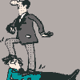

Unii oameni au talent la pictură, muzică sau sport. Alţii se pricep de minune la tâmplărie, zidărie, contabilitate ori mecanică auto. Iar cei care nu se pricep cu adevărat la nimic sunt născuţi să fie şefi.
Viaţa ca vânătoare de funcţii
Domnul Popescu face parte din ultima categorie. Încă de la grădiniţă obişnuia să organizeze cu pricepere şi eficienţă jocurile celorlalţi. Prelua conducerea din instinct, acţiona cu hotărâre, pecetluia cu mici atenţii dulci alianţele avantajoase şi stăvilea cu pumnul orice tentativă de nesupunere. Anii de şcoală l-au găsit în postura de comandant de grupă, în vreme ce facultatea tehnică i-a adus rolul de secretar UTC. Experienţa l-a învăţat să plece capul în prezenţa celor mai mari şi să ridice tonul în compania celor mai mici. Ştia când să zâmbească mieros şi când să se încrunte arţăgos, pe cine să susţină şi pe cine să zdrobească, unde să pupe şi unde să lovească.
Situaţia economico-socială a vremii, teama de necunoscut şi inteligenţa-i mediocră au făcut ca domnul Popescu să păstreze una şi aceeaşi slujbă anostă pe durata întregii sale vieţi active. Nu contează cu ce s-a ocupat exact, căci pe el munca nu l-a interesat niciodată cu adevărat. Aceasta era doar o mică şi nesemnificativă anexă a lucrului cu adevărat important: funcţia! Dar oricât s-a zbătut, oricât a turnat, pe oricâte capete a călcat şi oricâte dosuri a … onorat, eroul nostru n-a reuşit să-şi lipească lângă nume o mândră titulatură de lider.
Încă optimist, domnul Popescu şi-a continuat vânătoarea de funcţii chiar şi după ieşirea la pensie. Din păcate, vârsta înaintată i-a mai limitat opţiunile, lăsându-l să aleagă între ascensiunea pe scara ierarhică a clubului filateliştilor amatori, organizarea unui puci pentru preluarea conducerii organizaţiei “Prietenii tramvaielor de epocă” sau implicarea în campania electorală pentru şefia sindicatului pensionarilor din cartierul Bobocica.
În sfârşit şef. Chiar mai mult, Preşedinte!
Dezamăgit de variantele ce i se ofereau, bătrânul subinginer Popescu era cât pe-aci să renunţe la mult-dorita funcţie şi să se resemneze cu banala soartă a muritorilor de rând. Însă, într-o bună zi, ursita i-a surâs şi i-a scos în cale o şansă nesperată. Aceea de a deveni Preşedinte. De bloc. Mobilizat de mireasma unei victorii iminente, omul şi-a pus în funcţiune toate motoarele. A băgat zâzanie între vecini, şi-a ales partenerii, şi-a identificat duşmanii, a răspândit critici, a momit cu promisiuni fantasmagorice. A aplicat tot ce învăţase pe parcursul vieţii. Adunarea Generală a Proprietarilor l-a ales cu o majoritate confortabilă. Era singurul candidat.
Destin de lider împlinit

Momentul Kodak
Astăzi, Domnul Preşedinte Popescu umblă ţanţoş pe lângă clădirea cenuşie pe care a ajuns să o considere domeniul său. Şi de ce n-ar fi aşa? S-a luptat mult ca să organizeze lucrurile exact aşa cum a crezut el că e mai bine. Şi-a angajat nepotul instalator, cumnata contabil şi consăteana femeie de serviciu. A montat repartitoare, a schimbat apometre, lifturi şi interfoane, a instalat camere de supraveghere, a ordonat investiţii constante în obiecte de maximă necesitate precum: dibluri, lopeţi, polizoare, pompe, rechizite, seminţe, registre, brelocuri pentru chei, scaune, furtunuri de aerisire, scări universale cu multe tronsoane, ace, brice, mosorele. A comandat expertize contabile, arhivări, verificări şi multiplicări de documente.
Pentru Preşedintele Popescu fiecare zi e un nou prilej de a-şi exercita atribuţiile. Neobosit, el aleargă de la o scară la alta, lipeşte afişe şi plăcuţe de maximă importanţă despre starea tencuielii, respectarea orelor de odihnă şi curăţenia la ghenă, organizează verificări periodice în apartamentele vecinilor pentru a-i depista pe hoţii de apă şi căldură, invită lumea la dat zăpada şi încurajează lucrul colectiv la îngrijirea spaţiilor verzi. Nu lipseşte de la nicio şedinţă a primăriei şi se înscrie primul pe lista instructajelor organizate de poliţia locală, pompieri sau Sanepid. Adoră să ia cuvântul şi simte că nimic nu egalează voluptatea de a vorbi într-un cadru oficial.

Jurnal de bloc
Cu aşa un lider muncitor şi dedicat, blocatarii nu se pot supăra când domnul preşedinte mai ciupeşte şi el câte un leu-doi pe oră din banii asociaţiei. Doar fiecare nouă achiziţie merită sărbătorită cu un mic comision menit să răsplătească genialitatea conducătorului care a venit cu ideea. La urma urmei, totul e în interesul nespus al majorităţii. Şi la naiba cu minoritatea recalcitrantă care îl critică pentru risipă de resurse şi cheltuieli aberante! Nişte scandalagii, nişte pierde-vară zgârciţi, care nu vor să intre în rândul lumii, al oamenilor cumsecade. I-a urmărit el pe camere, are fişe informative cu fiecare şi ştie exact ce hram poartă şi cu ce se ocupă. Mai mare ruşinea, unii indivizi nu ştiu să aprecieze un Preşedinte de bloc adevărat!


{kind=link}
{kind=link}
{kind=link}
Totusi, trebuie sa recunosti ca e greu sa traiesti si cu stresul asta
Comments on this entry are closed.